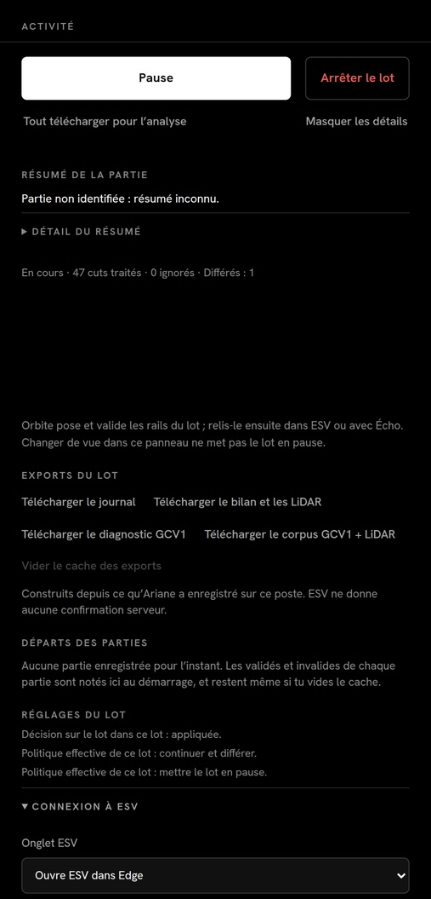
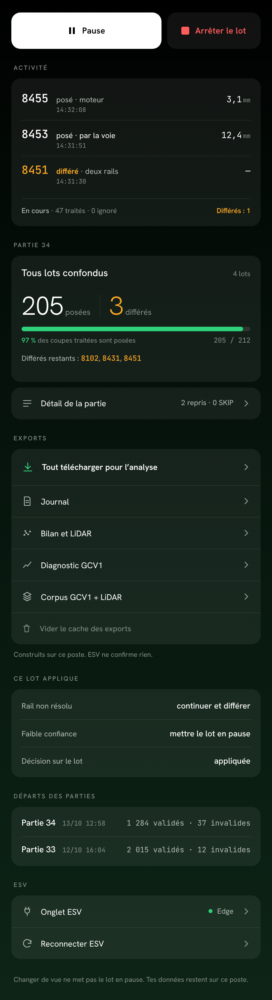
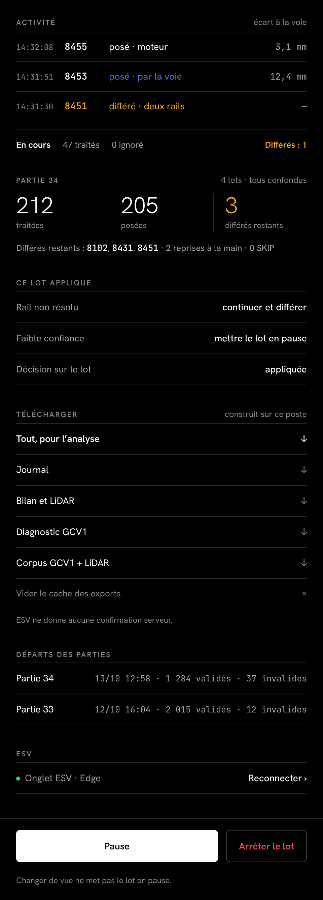
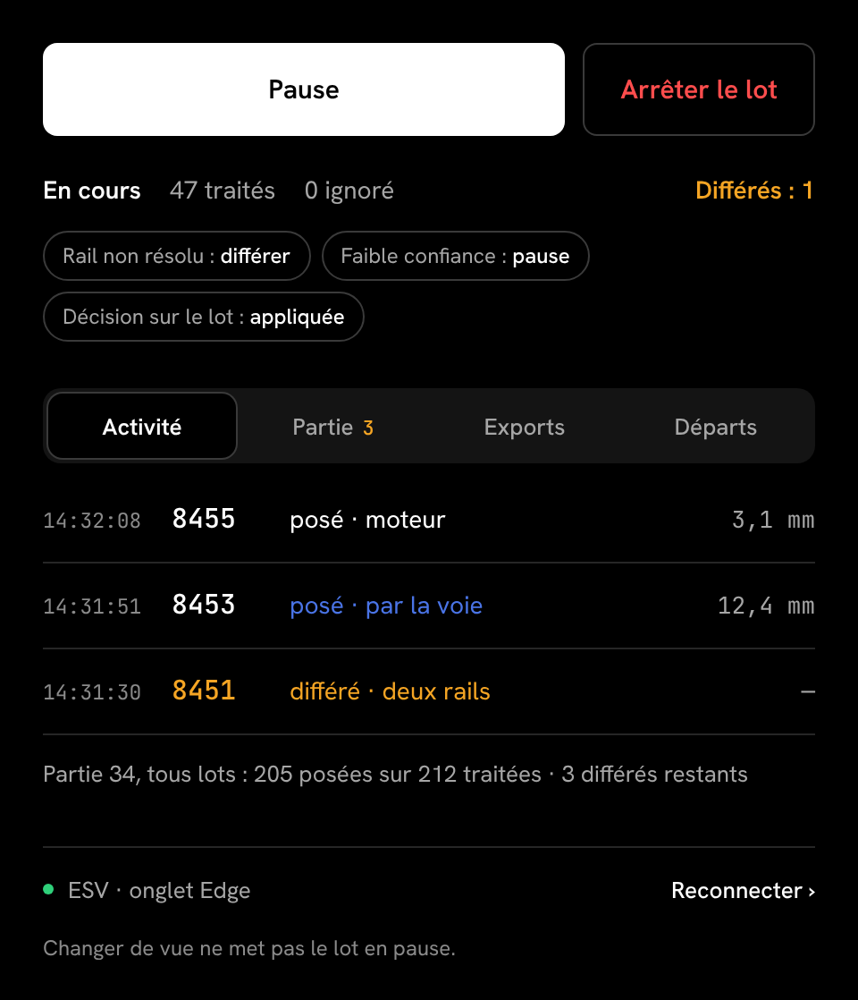
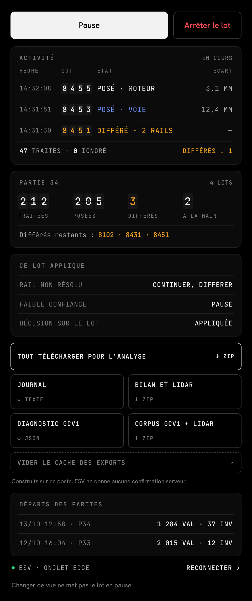

Thème sombre, 480 px de large, mêmes données fictives (lot en cours, partie 34). Le haut d’Orbite ne change pas.
Tout au même poids, liens gris, vide, phrases.

Inspirée Porsche : tuiles arrondies, gros chiffres, une jauge verte, lignes à chevron.

Ligne H au bout : noir, filets, deux colonnes, actions en pied.

Une chose à la fois : commandes, état, politique, puis un seul contenu.

Tableau des départs (piste E) : grille mono, cuts en palettes.
